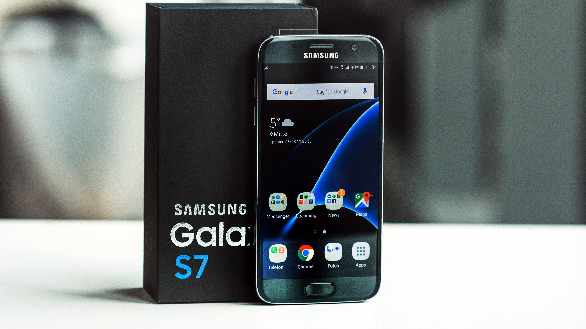
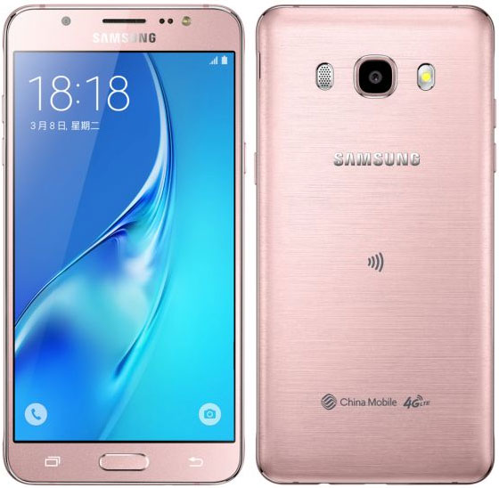

Dispositivos
| Recursos de dispositivos |
| Nombre |
Descripcion |
Imagen |
Menu |
| Iphone 7 |
El iPhone 7 y iPhone 7 Plus son unos teléfonos inteligentes de alta gama diseñados por Apple Inc. presentados el 7 de septiembre de 2016 como sucesores del iPhone 6s y iPhone 6s Plus. |
 |
Regresar |
| Iphone 6s |
El iPhone 6s es un smartphone de alta gama diseñado por Apple Inc., Es parte de la serie iPhone y fue anunciado el 9 de septiembre de 2015. El iPhone 6s y 6s Plus son conjuntamente sucesores del iPhone 6 y iPhone 6 Plus de 2014. |
|
Regresar |
| Iphone SE |
El iPhone SE (iPhone Special Edition)2 es un teléfono inteligente de alta gama diseñado por Apple como parte de la 9ª generación de la familia iPhone. Fue presentado el 21 de marzo de 2016 en el Apple Campus y tuvo un lanzamiento al mercado el 31 de marzo de 2016, 10 días después de su presentación.3 Los precios de entrada en Estados Unidos fueron de US$399 para la versión de 16GB y US$499 para la de 64GB. |
|
Regresar |
| Iphone 6 |
El iPhone 6 y iPhone 6 Plus son teléfonos inteligentes de gama alta que funcionan con el sistema operativo iOS 10, desarrollado por Apple Inc. Los dispositivos fueron presentados el 9 de septiembre de 2014 y lanzados a la venta el 19 de octubre de 2014. La serie iPhone 6 es en conjunto un sucesor del iPhone 5s y el iPhone 5C. |
|
Regresar |
| Samsung Galaxy s7 |
Samsung Galaxy S7 es un teléfono inteligente de gama alta hecho por Samsung Electronics. El dispositivo móvil fue presentado en el Mobile World Congress 2016 en Barcelona, España, junto a su hermano, el Samsung Galaxy S7 Edge. Ambos móviles son los sucesores del Galaxy S6 y del Galaxy S6 Edge, respectivamente. Están disponibles desde el 11 de marzo de 2016 en varios países. |
 |
Regresar |
| Samsung J5 |
El Samsung Galaxy J5 (SM-J500) DS es un teléfono inteligente de gama media fabricado por Samsung, que dispone del sistema operativo Android. Samsung que anunció su salida al mercado en junio del año 2015 y finalmente salió al público en julio del mismo año. Es el teléfono móvil de Samsung más vendido en España. |
 |
Regresar |
| Samsung Galaxy Note 7 |
el Samsung Galaxy Note 7 (comercializado como Samsung Galaxy Note7) es un teléfono inteligente diseñado y comercializado por Samsung Electronics, se trata de la sexta generación de la serie Note de Samsung. Fue lanzado el 19 de agosto de 2016 y fue descontinuado el 11 de octubre del mismo año debido a graves fallos en su mecanismo, lo que propiciaba que el dispositivo se incinerara por sí solo ya sea en reposo o estando en uso. |
|
Regresar |
| LG G4 |
El LG G4 es un teléfono inteligente de gama alta desarrollado por LG Electronics, siendo el sucesor del LG G3 y basado en Android (Android 5.0), pudiendo ser actualizado a Android 6.0. Se lanzó en Corea del Sur el 29 de abril de 2015 y posteriormente en el resto del mundo el 1 de junio de 2015. |
|
Regresar |
| LG X Screen |
El LG X screen es un smartphone de gama media de la serie X que destaca su pantalla, con una secundaria siempre encendida de 1.76 pulgadas que complementa a la principal |
|
Regresar |
| LG X Power |
Tiene una batería con gran capacidad (4,100 mAh) pero manteniendo un diseño delgado de 7,9 milímetros, la mejor combinación. Con la batería de LG X Power podrás tener una duración de hasta 2 días con una solo carga y no solo eso, también podrás compartir tu gran batería con otros dispositivos. |
|
Regresar |